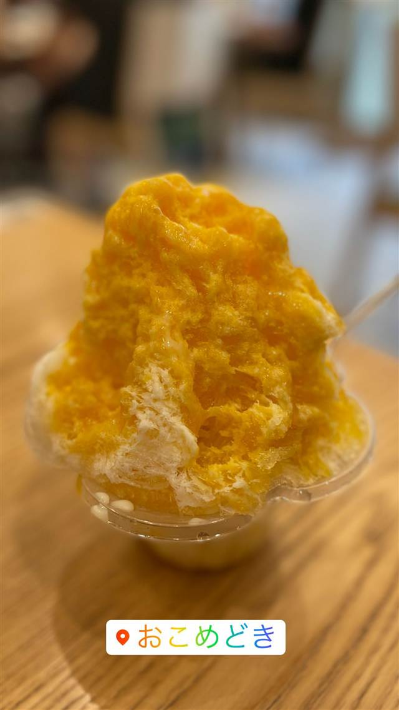

新垣ぜんざい屋
薪のかまどで8時間煮込む金時豆の氷ぜんざい
新垣ぜんざい屋
1948年創業、本部町営市場向かいで70年以上続く沖縄ぜんざいの老舗。薪のかまどでじっくり8時間煮込んだ金時豆をかき氷にのせた素朴な一品を守り続け、休日には行列ができる地元の人気店。
TRIVIA
へえ、という話
- メニューは長年ほぼ「氷ぜんざい」一品のみ
- 沖縄の「ぜんざい」は温かい汁物ではなく、かき氷に甘く煮た金時豆をのせた冷たいスイーツ
| 創業 | 1948年創業 |
|---|---|
| 看板 | 氷ぜんざい |
| こだわり | 薪をくべる特製のかまどで金時豆を黒糖とともに長時間（約8時間）煮込み、昔ながらの製法を守り続けている。 |
| 予算 | 昼 ～¥999 夜 ～¥999 |
| 定休日 | 月曜（祝日の場合翌日） |
| 場所 | 渡久地 沖縄県国頭郡本部町字渡久地11-2 |
| 注意 | 本部町営市場の向かいに位置し、メニューは氷ぜんざいのみというシンプルさ。休日は行列必至。 |
食べたもの：かき氷ぜんざい
NEARBY
近い店・同じ系統の店
-
 かき氷 日暮里駅
ひみつ堂
日光の天然氷を手動の削り機で削るマンゴーかき氷
昼 ¥1,000～¥1,999 夜 ¥1,000～¥1,999
かき氷 日暮里駅
ひみつ堂
日光の天然氷を手動の削り機で削るマンゴーかき氷
昼 ¥1,000～¥1,999 夜 ¥1,000～¥1,999
-

かき氷 原宿駅／明治神宮前駅 おこめどき 昼 ～2,000円 夜 ～2,000円 -
 かき氷 自由が丘
MOMO NATURAL 自由が丘店
家具ブランド1階の2階カフェで食べるティラミスかき氷
かき氷 自由が丘
MOMO NATURAL 自由が丘店
家具ブランド1階の2階カフェで食べるティラミスかき氷
-
 かき氷 渋谷駅
渋谷西村フルーツパーラー 道玄坂店
創業110年超、渋谷90年の老舗が出すマンゴーかき氷
昼 ¥1,000～¥1,999 夜 ¥1,000～¥1,999
かき氷 渋谷駅
渋谷西村フルーツパーラー 道玄坂店
創業110年超、渋谷90年の老舗が出すマンゴーかき氷
昼 ¥1,000～¥1,999 夜 ¥1,000～¥1,999
-
 かき氷 西武新宿駅
氷おばけ
歌舞伎町の居酒屋を間借り、メレンゲの「おばけ」がのるかき氷
昼 ¥1,000～¥1,999 夜 ¥1,000～¥1,999
かき氷 西武新宿駅
氷おばけ
歌舞伎町の居酒屋を間借り、メレンゲの「おばけ」がのるかき氷
昼 ¥1,000～¥1,999 夜 ¥1,000～¥1,999
-
 かき氷 駒沢大学駅
雪うさぎ
日光松月氷室の天然氷を極薄に削る進化系パンプキンかき氷
昼 ¥1,000～¥1,999 夜 ¥1,000～¥1,999
かき氷 駒沢大学駅
雪うさぎ
日光松月氷室の天然氷を極薄に削る進化系パンプキンかき氷
昼 ¥1,000～¥1,999 夜 ¥1,000～¥1,999